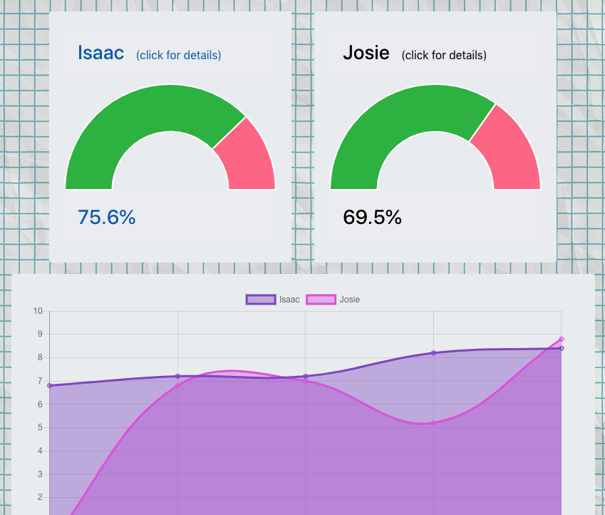

About Me
Web Projects

MoGraph Projects

Resume
 arthur.k777@gmail.com
arthur.k777@gmail.com


About
Thor Kuivanen
With 10 years of experience working in the fast paced, ever changing world of pharmaceuticals I am now coming to web development with a keen eye for details and an aptitude for creatively solving problems. I am wired to look at things with an analytical eye, but have a creative side that is always looking to come out and play.
Along with web development I have a strong interest in digital marketing and employ many different SEO tactics when designing sites. I also have been a major motion graphics enthusiast and hope to incorporate my animations in future projects.
I am currently designing web sites and web apps for small businesses and am always looking for an opportunity to join a company that fits my personality and values. Please reach out to me if you would like to discuss a project or job opportunity!
Web Projects
Many of my projects have a bit of my humor built in. I've found when learning new concepts that a premise that makes me laugh is a great motivator to try and learn as many features of the language or framework as possible.
Vulture
A tongue in cheek app to help people in an office find leftover food from meetings.
Node.js | Mongoose | Express | EJS | Bootstrap
World Explorer
Group project allowing users to save, like, and favorite different locations. I built the search and filter functionality, as well as the like and heart functionality.
AngularJs | Mongoose | Express | Bootstrap | JQuery
Llam-o-rama
Due to timing constraints my partner's original brilliant llama dating site was turned into a llama themed online store.
React | PostgreSQL | Apache | PHP | Javascript
The Fickle Parent
My bootcamp final project. A journal and kid ranking system for parents. No need to guess who your favorite is, the data doesn't lie.
React | PostgreSQL | Apache | PHP | ChartJS | SendGrid | Firebase Authentication
MoGraph Projects
I've always found motion graphics and VFX to be interesting and inspiring. Anything you imagine is possible. MoGraph is a hobby of mine and most of the examples below were created as a way to learn different tools in After Effects.
Check out my tumblr repository for more than what's listed below:
More ProjectsAdam & Eve Music Video
Project for a local musician. I wanted to combine live footage with my mograph project. I had my second child during this project, which made finding free time a bit of a challenge.
2018 MBCC Promo
Volunteered my time to create this promo for the Massachusetts Breast Cancer Coalition. I also made a spanish version.
Futura Project
A fun project for a course I was taking in video production. In theory this was based on the font type Futura.
Demon Face
Just a simple test to see if I could learn how to do some face distortion. Sound effects added for the heck of it.
Resume
Resume
While I'm newer to the web development career path I come with years of professional experience in equally important matters like time management, leadership, and developing interpersonal relationships within a team and across global partnerships. If anything, having a chance to start a new career makes me even more eager to learn as much as possible and become a valuable asset quickly.
Click on the button below to download my resume:
Resume